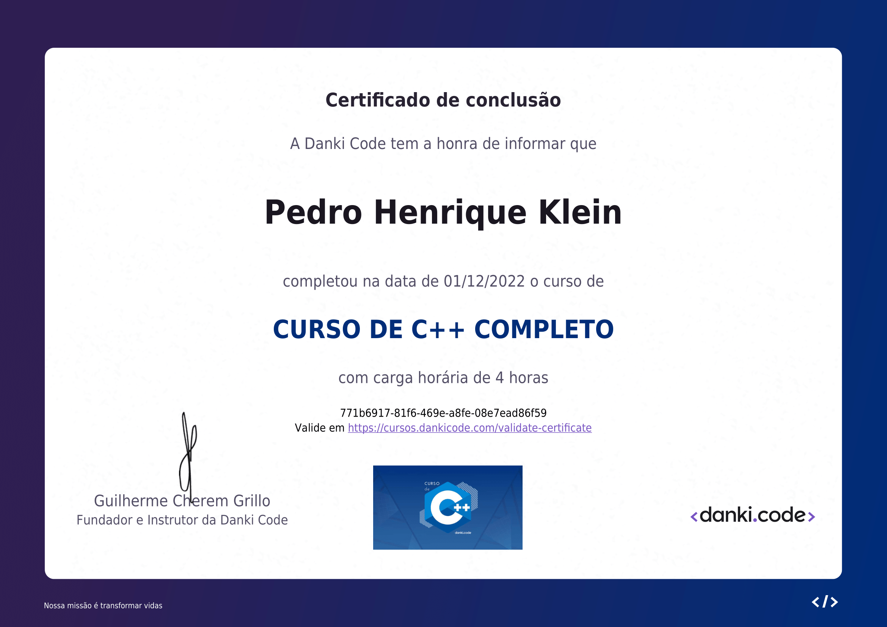
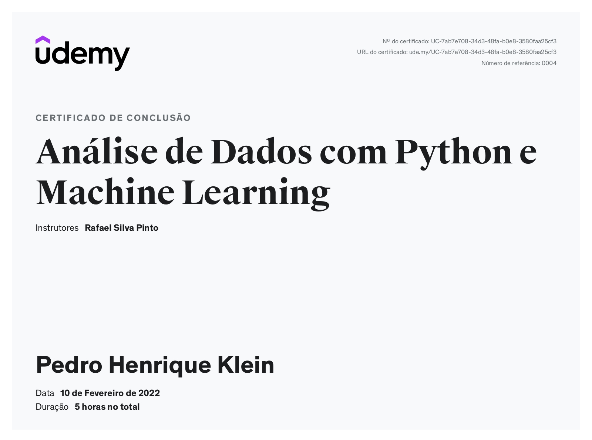

Certificados





Cientista da Computação - Engenheiro de Dados
Estudante de Ciência da Computação pela Universidade Federal da Fronteira Sul (UFFS) e engenheiro de dados na BIP, há três anos na área. Minha experiência profissional me proporcionou um sólido conhecimento em plataformas de computação em nuvem, como AWS e GCP, além de um entendimento aprofundado em bancos de dados e sistemas Linux.
Minha paixão pela tecnologia é evidente em meu constante desejo de aprender e explorar novas ferramentas e metodologias. Durante minha trajetória, adquiri habilidades significativas em desenvolvimento web, o que complementa minha expertise em engenharia de dados, permitindo-me desenvolver soluções completas e eficientes.
Além do meu compromisso com a excelência técnica, valorizo a colaboração e a inovação, sempre buscando contribuir de maneira significativa para os projetos em que estou envolvido. Sou um entusiasta da tecnologia, sempre à procura de desafios que me permitam crescer e evoluir tanto pessoal quanto profissionalmente.
Ciência da Computação (Março 2021 - Presente)
Durante meu curso de Ciência da Computação na Universidade Federal da Fronteira Sul (UFFS), tenho aprofundado meus conhecimentos em diversas áreas fundamentais da computação. O currículo abrangente inclui disciplinas como algoritmos, estrutura de dados, banco de dados, inteligência artificial, desenvolvimento de software, e sistemas operacionais. Essas matérias me proporcionaram uma base sólida tanto teórica quanto prática.
Participei de vários projetos acadêmicos que reforçaram minhas habilidades em programação, análise de dados e desenvolvimento web. Além disso, envolvi-me em atividades extracurriculares e grupos de estudo que estimularam meu interesse por tecnologias emergentes e metodologias ágeis.
Essa experiência acadêmica tem sido crucial para minha formação como engenheiro de dados, permitindo-me aplicar conceitos aprendidos em sala de aula diretamente em meu trabalho e em outros projetos pessoais.
Estagiário de Desenvolvimento Web (Novembro 2021 - Dezembro 2021)
Durante meu estágio na IXC-Soft, trabalhei no desenvolvimento web utilizando PHP, Twig, Docker e MariaDB. Minhas principais responsabilidades incluíam:
Essa experiência me proporcionou uma compreensão prática das melhores práticas de desenvolvimento web e do uso de tecnologias modernas para criar aplicações robustas e escaláveis.
Engenheiro de Dados (Janeiro 2022 - Agosto 2024)
Atuando como Engenheiro de Dados na Descomplica, tenho trabalhado com uma variedade de tecnologias e ferramentas para gerenciar e otimizar grandes volumes de dados. Minhas principais responsabilidades incluem:
Minha experiência na Descomplica tem sido fundamental para aprimorar minhas habilidades em engenharia de dados, permitindo-me aplicar soluções inovadoras e eficientes para desafios complexos de dados.
Engenheiro de Dados (Setembro 2024 - Presente)
Atualmente, atuo como Engenheiro de Dados na BIP, uma renomada empresa de consultoria. Minha função envolve o uso de tecnologias avançadas e a colaboração constante com diversas áreas e equipes para entregar soluções eficazes e inovadoras.
Essa posição tem me permitido aprofundar meu conhecimento nas melhores práticas de engenharia de dados, utilizando tecnologias de ponta para construir soluções robustas e escaláveis que atendem às necessidades complexas dos nossos clientes.
Desenvolvimento de um pipeline de dados orquestrado com Apache Airflow e DBT.
Stack:Este projeto demonstrou a eficácia da combinação de Airflow e DBT para criar pipelines de dados robustos e escaláveis, melhorando significativamente os processos de ETL e a gestão de dados.
O Snake Game é um jogo clássico onde o jogador controla uma cobra que se move pela tela.
Stack:Este projeto é um ótimo exemplo de como implementar um jogo clássico utilizando tecnologias web básicas e é ideal tanto para aprendizado quanto para demonstração de conceitos de programação em jogos.
Desenvolvimento de um ambiente DBT com Elementary em um banco PostgreSQL.
Stack:Este projeto busca unir todo o poder do DBT com o poder do Elementary, garantindo uma governança dos dados e gerando relatórios de cada execução.